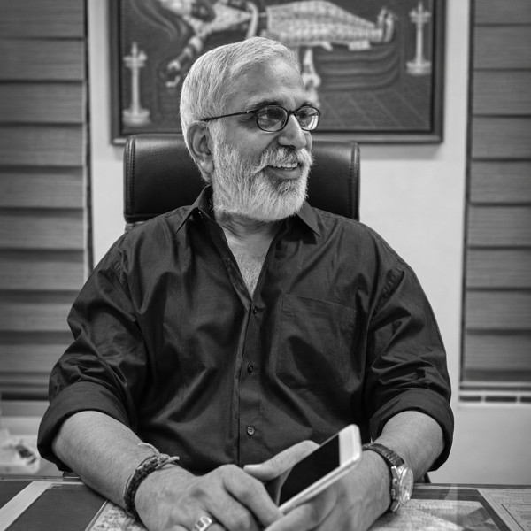

About the Firm
Kylas Associates was founded in 1991 by Dr. K. P. Kylasanatha Pillay, now a designated Senior Advocate practising before the Supreme Court of India. Over the years, the firm has grown into a team of eleven advocates supported by dedicated office staff, with offices in Kochi, Thiruvananthapuram and Delhi.
The firm handles a wide range of civil and criminal matters, writ petitions and public interest litigation, with service and education law at the centre of its practice. Its work extends from trial courts in Ernakulam and Thiruvananthapuram districts to the High Court of Kerala, the High Court of Delhi, the High Court of Karnataka, tribunals and the Supreme Court of India, with civil, criminal and writ matters also handled in Bengaluru. Alongside litigation, the firm undertakes the registration of property documents, societies and trusts, the drafting of deeds and wills, and advisory work in co-operative, mining and geology, land conversion and intellectual property matters.
Four members of the firm are mediators trained by the Mediation and Conciliation Project Committee (MCPC) of the Supreme Court of India, and the firm encourages the amicable settlement of disputes wherever it is in the client's interest.
Our approach
- 01.
Careful preparation
Every matter begins with a close reading of the facts and documents.
- 02.
Clear advice
Clients are told plainly where they stand and what their options are.
- 03.
Continuity
A matter can be taken from the trial court through appeal to the High Court and the Supreme Court within the same firm.
- 04.
Confidentiality
Client information is handled with discretion at every stage.

Dr. K. P. Kylasanatha Pillay
Senior Advocate, Supreme Court of India · Founder, Kylas Associates
Dr. K. P. Kylasanatha Pillay is a Senior Advocate of the Supreme Court of India and the founder of Kylas Associates. Enrolled as an advocate in February 1987, he practised before the High Court of Kerala and other courts until 2005, when he moved his practice to the Supreme Court of India. He was designated a Senior Advocate in 2009. He holds an LL.M. and a Ph.D. in law, and Master's degrees in English and History.
His principal areas of practice are constitutional law, administrative law, corporate law, jurisprudence, and arbitration and mediation. He is on the panel of Senior Advocates representing the Central Government before the Supreme Court of India, and is a Senior Panel Member of the Supreme Court Legal Services Committee. He is a mediator accredited by the Mediation and Conciliation Project Committee (MCPC) of the Supreme Court of India, and is empanelled as a mediator at the Mediation Centre of the Supreme Court of India.
He served as a Member and Vice-Chairman of the Bar Council of Kerala from 1997 to 2005, and as an Independent Director of NTPC Limited, a Maharatna company owned by the Government of India, from 2018 to 2021. He is a member of the Supreme Court Bar Association and the Kerala High Court Advocates' Association.
Alongside his practice, he has taught law for over three decades. He taught undergraduate students as part-time faculty from 1986 to 1998, served as a Resource Person at the National Judicial Academy, Bhopal (2006–2007), and has been Visiting Faculty at the Indian Law Institute. As an approved research guide at the National University of Advanced Legal Studies (NUALS) from 2012 to 2021, he guided two scholars, both Associate Professors at Government Law College, Thrissur, to their doctorates. He is presently Senior Visiting Professor for the LL.M. programme at the Kerala Law Academy.
He is the mentor of CG3 (Connecting Governed, Governing, Governance), a hub for legal research and public programmes, through which he has guided legal awareness programmes for students, workshops for elected representatives of local bodies in Kerala, mediation training for lawyers and coaching for UGC NET and JRF aspirants.
Qualifications
- LL.M.
- Ph.D. (Law)
- M.A. (English)
- M.A. (History)
Positions held
- Designated Senior Advocate, Supreme Court of India (2009)
- Panel of Senior Advocates for the Central Government, Supreme Court of India
- Senior Panel Member, Supreme Court Legal Services Committee
- Mediator accredited by the MCPC; empanelled at the Mediation Centre, Supreme Court of India
- Member and Vice-Chairman, Bar Council of Kerala (1997–2005)
- Independent Director, NTPC Limited (2018–2021)
- Senior Visiting Professor (LL.M.), Kerala Law Academy
- Mentor, CG3 (Connecting Governed, Governing, Governance)
Email: dr.kppillay@gmail.com · Mobile: +91 98710 17940